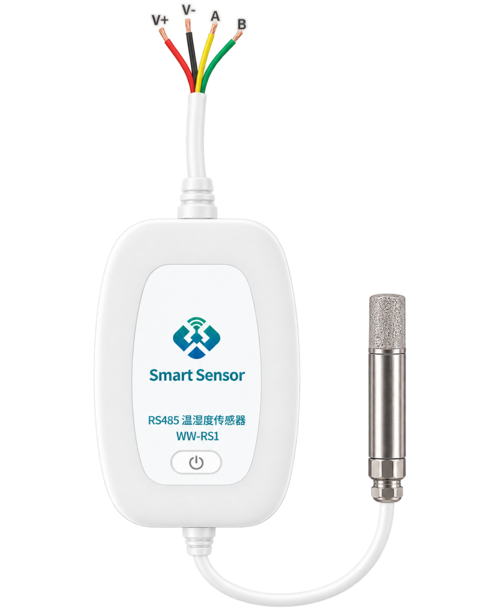
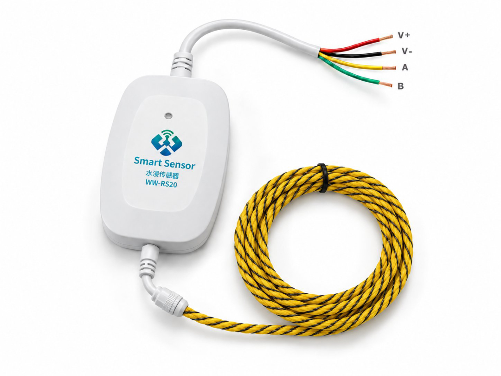
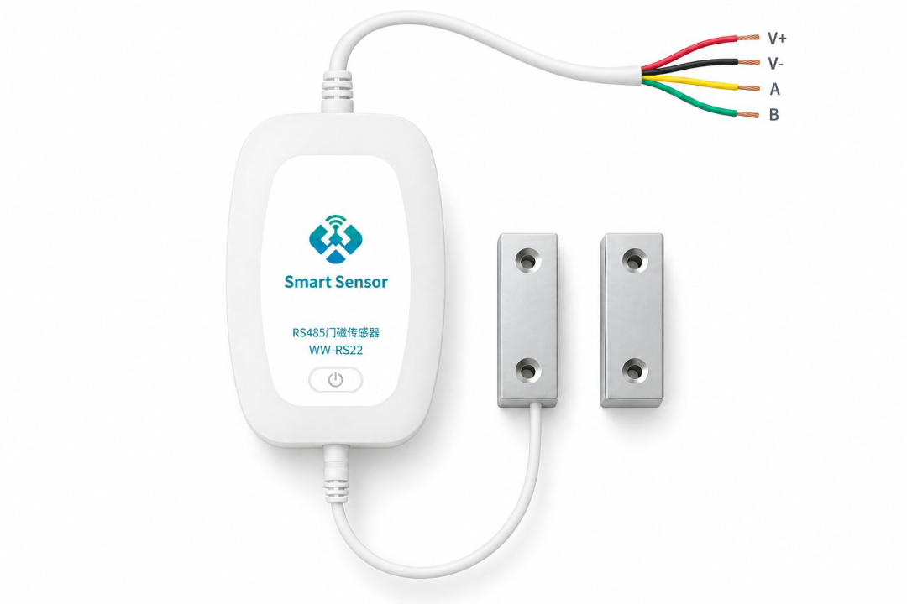

WW-RS 系列 RS485 传感器（小白盒）
隔离 RS-485 多路采集节点，Modbus RTU 从机协议，支持温湿度、水浸、门磁等信号采集与网关对接。
万维物联网（南京）有限公司 南京市浦口高新区星火路 20 号 | x@wwiot.com | 136 7512 0926
1产品概述与型号
WW-RS 系列（小白盒 485）是一款基于隔离 RS-485 的传感器采集节点，通过 Modbus RTU 从机协议对外提供寄存器数据，适用于机房环境、配电柜、机柜等场景的门磁、水浸、温湿度、温度采集与网关对接。
1.1 订货型号
| 型号 | 产品 | 采集通道 | 说明 |
|---|---|---|---|
| WW-RS10 | RS485 温湿度传感器 | SHT40 温湿度 | 温度、湿度双参数输出 |
| WW-RS20 | RS485 绳式水浸传感器 | 水浸（绳式） | 水浸线缆沿铺设路径检测泄漏 |
| WW-RS21 | RS485 点式水浸传感器 | 水浸（点式） | 单点电极检测积水 |
| WW-RS22 | RS485 门磁传感器 | 门磁开关量 | 柜门 / 房门开合状态检测 |
四个型号共用同一套硬件平台与寄存器映射，仅按型号启用对应通道；未启用的通道寄存器返回无效值
0xFFFF。1.2 产品图片



1.3 主要特性
- 隔离 RS-485 总线，Modbus RTU 从机，默认 9600 8N1、从站号 1
- 内置采集通道：SHT40 温湿度（I²C）、PT100 三线制温度（ADS1220 24 位 ADC）、DS18B20 数字温度（单总线）、门磁与水浸两路开关量输入
- 板载 LED 心跳指示（1 Hz）
- 兼容网关槽协议（基址 16000），可无缝接入既有网关系统
2硬件规格
| 项目 | 参数 |
|---|---|
| 主控 MCU | HC32L196KCTA-LQ64（ARM Cortex-M0+） |
| 供电输入 | 9 ~ 36 V DC |
| 电源链路 | LMR16006（降压至 5V）→ AMS1117（3.3V） |
| RS-485 收发器 | CA-IS2092A（隔离），总线保护 CDSOT23-SM712 |
| 输入浪涌保护 | SMBJ60CA |
| 通信接口 | RS-485、调试串口、I²C、SPI、单总线 |
| 指示灯 | 1 路 LED（PA05），运行心跳 1 Hz |
| 调试串口 | UART1，TX=PA02，RX=PA03，115200 8N1 |
3RS-485 通信参数
| 参数 | 值 |
|---|---|
| 物理层 | RS-485，隔离收发（CA-IS2092A） |
| 协议 | Modbus RTU |
| 波特率 | 9600 bps |
| 数据位 / 校验位 / 停止位 | 8 / 无（None） / 1 |
| 默认从站地址 | 1（支持广播地址 0） |
| 校验 | CRC16-Modbus（多项式 0xA001，初值 0xFFFF，低字节在前） |
| 帧间隔（空闲判定） | 5 ms |
| 接收缓冲区 | 64 字节 |
| 单次最大读取数量 | 32 个寄存器 |
4Modbus RTU 协议说明
4.1 功能码
| 功能码 | 名称 | 说明 |
|---|---|---|
| 0x03 | 读保持寄存器 | 读取 1 ~ 32 个寄存器 |
| 0x04 | 读输入寄存器 | 与 0x03 读取同一份数据镜像 |
仅支持读操作。非法功能码、CRC 错误、非本机地址的报文将被静默丢弃，不返回异常码。
4.2 请求帧格式（8 字节）
| 字节 | 内容 | 说明 |
|---|---|---|
| 0 | 从站地址 | 1 ~ 247（或 0 广播） |
| 1 | 功能码 | 0x03 / 0x04 |
| 2~3 | 起始地址 | 高字节在前 |
| 4~5 | 寄存器数量 | 高字节在前，1 ~ 32 |
| 6~7 | CRC16 | 低字节在前 |
4.3 响应帧格式
| 字节 | 内容 |
|---|---|
| 0 | 从站地址 |
| 1 | 功能码 |
| 2 | 字节数（= 寄存器数量 × 2） |
| 3… | 数据（每个寄存器 2 字节，高字节在前） |
| 末 2 字节 | CRC16，低字节在前 |
5寄存器总表
5.1 本机寄存器（0x0000 ~ 0x000E）
| 地址 Dec | 地址 Hex | 名称 | 类型 | 说明 |
|---|---|---|---|---|
| 0 | 0x0000 | 门磁状态 | U16 | 0=开门，1=闭合 |
| 1 | 0x0001 | 水浸状态 | U16 | 0=干燥，1=泄漏 |
| 2 | 0x0002 | SHT40 温度 | S16 | 单位 0.1℃，无效 0xFFFF |
| 3 | 0x0003 | SHT40 湿度 | U16 | 单位 0.1%RH，范围 0~1000，无效 0xFFFF |
| 4 | 0x0004 | PT100 温度 | S16 | 单位 0.1℃，无效 0xFFFF |
| 5 | 0x0005 | DS18B20 温度 | S16 | 单位 0.1℃，无效 0xFFFF |
| 6 | 0x0006 | 传感器状态 | U16 | 见 5.3 状态位定义 |
| 7 | 0x0007 | 固件版本 | U16 | 0x0101 = V1.0.1 |
| 8 | 0x0008 | 从站地址 | U16 | 默认 1 |
| 9 | 0x0009 | 采样序号 | U16 | 每 1 s +1，溢出回绕 |
| 10 | 0x000A | ADS1220 原始码 [31:16] | U16 | ADC 24 位原始码高 16 位 |
| 11 | 0x000B | ADS1220 原始码 [15:0] | U16 | ADC 24 位原始码低 16 位 |
| 12 | 0x000C | PT100 电阻值 | U16 | 单位 1 Ω，量程 0 ~ 65535 |
| 13 | 0x000D | DS18B20 原始值 | U16 | 温度原始寄存器或总线状态 |
| 14 | 0x000E | 调试信息 | U16 | 高字节=DS18B20 返回码，低字节=ADS1220 返回码 |
5.2 网关兼容槽（基址 16000 = 0x3E80，共 10 个）
| 地址 Dec | 地址 Hex | 偏移 | 名称 | 类型 | 说明 |
|---|---|---|---|---|---|
| 16000 | 0x3E80 | 0 | 电量/供电 | U16 | 市电供电，固定 100 |
| 16001 | 0x3E81 | 1 | 温度 | S16 | 优先级 SHT40 → PT100 → DS18B20，单位 0.1℃ |
| 16002 | 0x3E82 | 2 | 湿度 | U16 | SHT40，单位 0.1%RH |
| 16003 | 0x3E83 | 3 | PT100 温度 | S16 | 单位 0.1℃ |
| 16004 / 16005 | 0x3E84 / 0x3E85 | 4 / 5 | 保留 | U16 | 返回 0xFFFF |
| 16006 | 0x3E86 | 6 | 开关量 | U16 | bit0=门磁，bit1=水浸 |
| 16007 / 16008 | 0x3E87 / 0x3E88 | 7 / 8 | 保留 | U16 | 返回 0xFFFF |
| 16009 | 0x3E89 | 9 | 采样序号 | U16 | 每 1 s +1，溢出回绕 |
与既有网关 WWG3/CRoC 的 10 寄存器槽对齐（device_type=16，index=0）。
5.3 状态寄存器（地址 6）位定义
| 位 | 值 | 名称 | 说明 |
|---|---|---|---|
| bit0 | 0x0001 | SHT40 有效 | 1 = 温湿度读取成功 |
| bit1 | 0x0002 | PT100 有效 | 1 = PT100 读取成功 |
| bit2 | 0x0004 | DS18B20 有效 | 1 = DS18B20 读取成功 |
| bit3~15 | — | 保留 | 恒为 0 |
5.4 数据编码说明
- 温度类寄存器：有符号 16 位整数，实际温度(℃) = 寄存器值 ÷ 10。如 0x00FA（250）= 25.0℃；负温为补码，0xFFCE（-50）= -5.0℃。
- 湿度寄存器：无符号 16 位整数，实际湿度(%RH) = 寄存器值 ÷ 10，范围 0~1000 对应 0.0~100.0%RH。
- 电阻寄存器（地址 12）：无符号 16 位整数，单位 1 Ω。
- 无效值：未接入或读取失败的传感器返回 0xFFFF（有符号温度寄存器读作 -1）。
6读取示例
以下均为读取请求帧（从站地址 01）。
读前 10 个寄存器（地址 0~9）：
01 03 00 00 00 0A C5 CD
读全部本机寄存器（地址 0~14）：
01 03 00 00 00 0F 05 CE
读网关兼容槽（地址 16000 起，共 10 个）：
01 03 3E 80 00 0A C9 CD
6.1 响应示例
读取前 10 个寄存器（假设门闭合、无漏水、SHT 25.0℃ / 50.0%RH、PT100 25.5℃、DS18B20 25.2℃、状态 0x07、固件 0x0101、从站 1、序号 12）：
01 03 14
00 01 00 00
00 FA 01 F4
00 FF 00 FC
00 07 01 01
00 01 00 0C
XX XX
XX XX 为 CRC16（低字节在前）
| 地址 | 值 | 含义 |
|---|---|---|
| 0 | 0x0001 | 门磁闭合 |
| 1 | 0x0000 | 无水浸 |
| 2 | 0x00FA | 25.0℃ |
| 3 | 0x01F4 | 50.0%RH |
| 4 | 0x00FF | 25.5℃ |
| 5 | 0x00FC | 25.2℃ |
| 6 | 0x0007 | SHT40 + PT100 + DS18B20 均有效 |
| 7 | 0x0101 | 固件 V1.0.1 |
| 8 | 0x0001 | 从站号 1 |
| 9 | 0x000C | 采样序号 12 |
7传感器参数与量程
| 传感器 | 通信接口 | 量程 | 精度 / 说明 |
|---|---|---|---|
| SHT40 | I²C（0x44/0x45） | 温度 -45~130℃，湿度 0~100%RH | 高精度模式 |
| PT100 | ADS1220 SPI，三线制 | -80~400℃ | 双 IDAC 100µA + PGA16，外部参考 4530Ω |
| DS18B20 | 单总线 PA04 | -55~85℃ | 9 字节暂存器 CRC 校验 |
| 门磁 | 数字输入 PF05 | 0/1 | 闭合=高，20 ms 消抖 |
| 水浸 | 数字输入 PF04 | 0/1 | 湿=高，20 ms 消抖 |
8工作流程与安装注意
8.1 工作流程
- 上电初始化：先初始化 RS-485（避免传感器初始化阻塞时无应答），再初始化各传感器。
- 主循环周期：数字量（门磁 / 水浸）连续采样消抖；每 1 s 采集一次 SHT40、PT100、DS18B20 并刷新寄存器；轮询 RS-485 解析 Modbus 请求并应答；LED 以 1 Hz 心跳闪烁。
- 异常处理：传感器失联时自动尝试重新初始化，对应寄存器返回 0xFFFF，状态位置 0。
8.2 安装与接线注意
- 供电范围 DC 9~36 V，接线前确认极性，避免反接损坏电源链路。
- RS-485 总线 A/B 不要接反，长距离布线建议在总线两端加 120 Ω 终端电阻。
- 同一总线上各从站地址不得重复，单次读取寄存器数量不超过 32。
- 水浸探头（WW-RS20 绳式 / WW-RS21 点式）应避免长期浸泡在腐蚀性液体中。
- 门磁（WW-RS22）安装时确保磁铁与主体间隙在有效感应距离内。